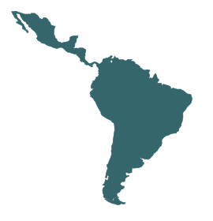

Dainyel on the move
Follow the journey.
A trip through Latin America, shared one place and story at a time.

On the moveTrip to Latin America
The journey is underway.
Follow the places, stories and moments I share along the way.
On the move
The journey is underway. Follow the stories and shared places along the way.
--Days--Hours--Minutes--Seconds
Latest shared place: Curaçao.
Travel days use the trip’s reporting timezone: Europe/Amsterdam.
Follow the shared journey →Postcards from Dainyel
A little piece
of the journey.
A weekly postcard with interesting facts about the places I’m exploring, plus travel stories, films and moments from the road — straight to your inbox.
Read a past Postcard first →Sign up for PostcardsOpen the signup form
Join instantly. No confirmation click needed. Unsubscribe at any time. Form not loading? Sign up here →
City and country only, shared when I choose to.
Revealed along the way.
New places and moments will appear here as I share them.